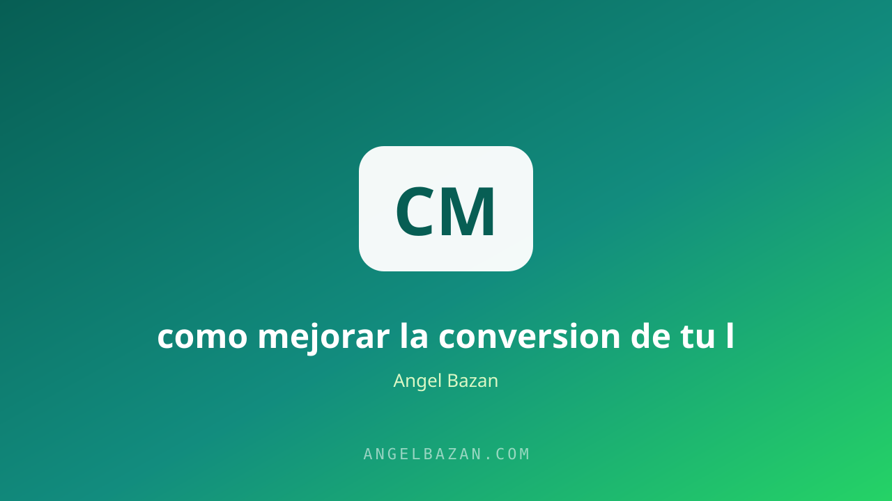

Cómo mejorar la conversión de tu landing page (12 tácticas probadas)
El anuncio paga por el clic; la landing paga por la venta. Estas 12 tácticas convierten tu página en una máquina de ventas sin gastar un sol más en tráfico.
En este artículo
El anuncio consigue el clic; la landing consigue la venta. La mayoría de los negocios no pierde dinero por falta de tráfico, sino porque su página de ventas deja escapar a personas que ya estaban interesadas. Si tu embudo no convierte, comprar más anuncios solo acelera la pérdida. La buena noticia es que la conversión se entrena: estas 12 tácticas llevan años funcionando en landing pages reales, de cursos digitales a servicios que cierran por WhatsApp.
No las apliques todas de golpe: implementa de una en una y mide. La diferencia entre una landing que convierte y una que no casi nunca está en un cambio gigante, sino en una suma de detalles. Antes de empezar, define qué vas a medir: tasa de conversión, costo por lead y costo por cliente. Con esos números sabrás si cada ajuste funcionó. Si necesitas recordar la base antes de optimizar, repasa qué hace que una landing convierta en primer lugar.

1. El mensaje único que lo cambia todo
La primera impresión define la conversión. Si en cinco segundos el visitante no entiende qué vendes, a quién va dirigido y por qué debe quedarse, se va. El titular debe prometer un resultado concreto y el subtítulo debe explicar el mecanismo: cómo se logra ese resultado. Ese "cómo" tiene nombre y es la pieza que diferencia tu oferta de cualquier genérico: el mecanismo único. Cuando el mensaje es único, la promesa se vuelve creíble y la página gana los primeros segundos decisivos.
2-4. Copy que habla del problema, no del producto
El visitante no compra lo que haces: compra la solución a su problema. Por eso el copy se escribe con las palabras del cliente, no con las del producto. La jerarquía correcta es simple:
- Titular que promete el resultado que tu cliente quiere.
- Subtítulo que explica el mecanismo y le da credibilidad a la promesa.
- Bullets que responden objeciones antes de que se conviertan en dudas.
Cada sección de la página debe resolver una objeción: el precio, el tiempo de entrega, la garantía, la credibilidad. Un copy bien escrito es la táctica con mayor retorno por hora invertida. Y recuerda: si el copy convence pero el diseño no acompaña, pierdes igual.
5-6. Jerarquía visual y velocidad
El ojo recorre la página en forma de Z: titular, imagen, CTA. Si el diseño dispersa la atención, el mensaje se pierde aunque el texto sea perfecto. Usa contraste fuerte en los botones, limita el ancho de los párrafos y elimina todo elemento que no empuje a la acción. La velocidad también es conversión: cada segundo extra de carga reduce la tasa de forma medible. Una landing lenta mata incluso al mejor copy del mercado.
7-8. Prueba social y avales
La desconfianza es el asesino silencioso de la conversión. El visitante no te conoce y necesita pruebas de que tu promesa es real. Los testimonios con nombre, foto y resultado medible valen más que diez adjetivos. Añade cifras cuando existan: alumnos formados, ventas realizadas, casos concretos. Y entiende la garantía así:
- No es un costo: es una herramienta que elimina la última objeción.
- Sí es visible: si está escondida en el pie de página, no cumple su función.
- Sí es específica: "30 días de garantía, devolución total" genera más confianza que "garantía total".
9-10. CTA y formulario sin fricción
El CTA debe ser una instrucción directa con beneficio: "Quiero el acceso", no "Enviar". Repítelo a lo largo de la página y en el menú, no solo al final. El formulario, mientras menos campos, más conversión: pide solo lo esencial y deja el resto para la conversación posterior. Si tu modelo vende por mensajes, el embudo de WhatsApp desde cero aprovecha ese interés inmediato antes de que se enfríe.
11-12. Seguimiento y retargeting
La mayoría de los visitantes no compra al primer contacto, y eso es normal. Por eso el seguimiento es una táctica de conversión, no una opción: quienes llegaron a tu página y se fueron son tu audiencia más caliente. El retargeting en Meta Ads para WhatsApp recupera esa intención sin molestar, y el mensaje personal convierte lo que el clic frío no pudo. El sistema completo se construye dentro de un embudo de ventas y se mide con la calculadora de CPL y ROAS para decidir qué ajustes valen la pena.
Preguntas frecuentes
¿Cuánto tarda en notarse la mejora? Los cambios de mensaje y CTA pueden verse en la primera semana con tráfico constante; los de prueba social dependen de reunir testimonios, que suelen tardar un par de semanas más.
¿Mido primero el tráfico o la página? Primero la página: si la landing convierte, comprar más tráfico tiene sentido. Convertir el mismo tráfico con una página mejor es la mejora más barata del negocio.
¿Qué pasa si mi página ya convierte bien? Aplica la optimización a la siguiente etapa: el formulario, el mensaje de seguimiento o el order bump, upsell y downsell. La conversión se mejora en cadena, no solo en la puerta de entrada.

Angel Bazán
Especialista en funnels, Meta Ads y WhatsApp + IA. Ayudo a negocios a vender más combinando tráfico pagado con conversaciones automatizadas.
Conoce más sobre mí →Aprende a crear y vender productos digitales con Meta Ads, WhatsApp e IA
Clases en vivo, estrategias y recursos para construir tu sistema desde cero. 🚀
Únete gratis al grupo